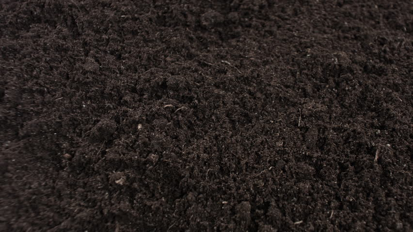

Black Soil (Chernozem)

- Fertility Rate - Extremely Fertile.
- Colour - Black.
- Rich in Humus.
- Neural to Slightly Alkaline pH.
- Black soil is ideal for range of crops including Cotton, Soyabeans, Oilseeds, and certain type of Fruits and Vegetables.
- Rich in Clay Minerals.
- Rich in Montmorillonite,which gives it excellent moisture-retaining properties.
- Primarily found in Deccan Planteau of India, covering states like Maharastra, Gujrat, Madhya Pradesh and parts of Rajasthan.